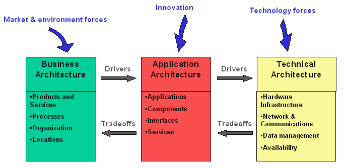
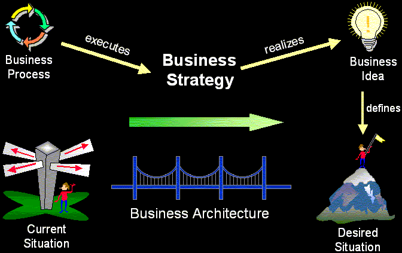

|
We define business architecture as an organized set of elements with clear relationships to one another, which together
form a whole defined by its functionality. The elements represent the organizational and behavioral structure of a
business system and show abstractions of the key processes and structures of the business [NDL97], [ERI00].
Different people have different backgrounds and perspectives. When attempting to achieve a common understanding on
something as complex as the organization-including its processes, structure, and strategy-we need a way to describe
architecture and architecturally significant issues in a way that will be understood by each impacted group. This is
done by describing three different-yet-related architectures as shown and described later in this document.

Business architecture is a description of the significant aspects of the organization. Application
architecture is a description of the software applications that support the business, including how those
applications are used and how they interact with each other. Technical architecture is a description of the
hardware infrastructure that supports the software applications.
The business architecture must govern the application architecture, which in turn must govern the technical
architecture. This does not imply a hierarchical relationship wherein the business architecture prescribes to the
application architecture, and the application architecture prescribes to technical architecture. Rather, it means that
goals and constraints (called drivers) are communicated in one direction, and any architectural decisions (called
tradeoffs) that affect the governing architecture must be made at the level of the governing architecture. An
architectural goal implies a desired condition, while an architectural constraint implies mandatory compliance.
However, even constraints can be intentionally ignored. For example, a constraint that requires the business to comply
with certain legislation might be ignored because the cost of making the changes necessary to comply far exceed the
penalties incurred by noncompliance.
Architecting is about balancing forces and making tradeoffs to create a solution that optimally satisfies conflicting
requirements. This means that the business architecture defines goals and constraints that describe the support that it
requires from application architecture. The same applies to the application and the technical architecture. Where
conflicts arise, as they always do, localized sub-optimal solutions must be found in order to ensure an optimum overall
solution. When these decisions have a broad impact, they are termed architectural issues and must be formally
agreed to by stakeholders represented by an architecture board.
These different architectures must always be considered when communicating with stakeholders. Discussing only one of
them with an individual who does not understand its form, application, or notation results in ineffective
communication. Furthermore, it can cause that individual to misunderstand the consequences of his or her decisions
regarding the other architectures. The impact of decisions in one of the architectures must be translated to the other
ones. This helps stakeholders understand the benefits and disadvantages of tradeoffs, which leads to architectural
alignment. Architectural alignment helps us understand the consequences of decisions.
The business architecture is what we use to communicate with different stakeholders about the business to ensure a
common, consistent understanding. We can describe the business architecture as the framework within which we make
changes to the organization to enable the business to ultimately realize the business idea, as shown in the figure.

Because business architecture is complex and difficult to measure, we divide it into a number of different views. Much
as the software architecture is defined in Concept:
Software Architecture, the architectural views of the business will be defined here.
Each view describes one aspect of the entire business. It therefore contains an architecturally significant subset of
what would be a complete definition. In other words, an architectural view contains the 20% that really matters to that
aspect of the business [ROY98].
The architectural views are helpful in discussing the business architecture with different stakeholders. Because each
stakeholder has one or several views that are of particular interest, he or she can focus on those aspects of the
organization that are associated with those views without having to understand everything else as well.
Note that not all views apply to all situations. Some views can be ignored when they add no value, and sometimes it
might be necessary to define new views. Here are some typical business architectural views:
-
Market View describes the markets in which the business operates, customer profiles and offerings, or the
products and services that the business offers to customers in the target markets.
-
Business Process View describes the significant goals of the business and outlines the key business use
cases that support these goals. When business use cases are used to document business processes, this view is
called the Business Use Case View.
-
Organization View describes the groupings of roles and responsibilities within the business and the
realization of business use cases.
-
Human Resource View describes remuneration profiles and incentive mechanisms, key cultural characteristics
and mechanisms, competence profiles, and education and training mechanisms.
-
Domain View describes the major business concepts and information structures used by the business.
-
Geographic View describes the distribution of organizational structure, function and resources across
physical locations such as cities and countries.
-
Communication View describes the communication pathways within the business.
Mapping of the Business Architectural Views to RUP Viewpoints
RUP Viewpoints are described in Concept:
System Architecture. These viewpoints are applicable to system development generally. When the 'system' under
consideration is a business, the Business Architectural Views form a more pertinent specialization of the generic
viewpoints. The following table shows how they are related. Note that the Business Architectural Views, by the
definitions offered in Concept:
System Architecture, in some cases cover multiple views (where a view is the intersection of viewpoint and
abstraction level).
|
Business Architectural Views
|
RUP Viewpoints
|
|
Market View
|
The market view defines, at least partially, the context for the business - it focuses on actual
and potential products and services offered to customers in the chosen markets. It maps to the
intersection of the Logical Viewpoint and Context Level. For the purposes of the Work Product: Business Architecture Document, the
Market View is limited to those factors that impact the architecture, and areas where changes to the
architecture would affect performance in chosen markets.
More general discussion of markets and the rationale for business strategy choices is found in Work Product: Business Vision.
The Market View may be used to set new Work Product: Business Goals, which, in
turn, may influence the Business Architecture.
|
|
Business Process View
|
This mapping is straightforward - to the intersection of the Process Viewpoint and Context
Level.
|
|
Organization View
|
The organization view is about the way the business is structured to realize business use cases, not about
positional or staff hierarchies and networks. You would expect, for example, to see collaborations of
Work Product: Business Systems in this view. It therefore
maps to the intersection of the Logical Viewpoint and Analysis Level.
|
|
Human Resource View
|
The human resource view extends the Worker Viewpoint, potentially at all levels, most
significantly at the Context Level where policy is defined, but at Analysis and
Design Levels too, with, for example, the application of competence profiles.
|
|
Domain View
|
The domain view maps fairly well to the intersection of the Information Viewpoint and Context
Level.
|
|
Geographic View and Communication View
|
These views together map to the intersection of the Distribution Viewpoint and Context
Level (the Enterprise Locality View), with localities relating to the geographic aspect and
connectors to the communication aspect.
|
|